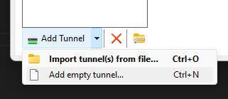

About
We use VPNs in the way they were originally intended.
Connecting computers across the web into one single network where we do what we want, the way we want to do it.
No public IP? No control over your home network? No problem.
Share files across the network from anywhere, to anywhere. Forward a port to host a server. Get access to VPN exclusive databases.
We don't mess around. Help us build an intranet fit for only the giga-est of chads.
Join
The VPN is invite only. Contact Bread or Carson to request to join.
Client Setup (Linux)
First, Download Wireguard for your Linux environment.
Second, Enable IP Forwarding in the text file /etc/sysctl.conf, by removing the comment on line 28:
#net.ipv4.ip_forward = 1 → net.ipv4.ip_forward = 1
You can also do this for IPv6 on line 33, if you want, which we may support in the future, but don't currently:
#net.ipv6.ip_forward = 1 → net.ipv6.ip_forward = 1
Third, generate a key pair to use. You will put your private key on line 2 in the /etc/wireguard/wg0.conf file, and the public one you will give to Bread or Carson.
wg genkey > server-private-key// Generate Private Key
wg pubkey < server-private-key > server-public-key// Generate Public Key from Private Key
This will generate a key pair, and store them in text files. You can use cat to view them:
cat server-private-key // Keep this secret.
cat server-public-key // Give this to Bread or Carson
Now, you can make a configuration file at /etc/wireguard/wg0.conf, and fill it with the following:
[Interface]
PrivateKey = # (Your Private Key)
Address = 10.0.0.X/32 # Where "X" = Address given by Bread or Carson
DNS = 10.0.0.1 # Use Gigachad DNS (optional)
[Peer]
PublicKey = y8+He4nBEAiVcjsxzP70qwfgJlkcs7g8LcWWQfi6nEE=
AllowedIPs = 0.0.0.0/1, 128.0.0.0/1
Endpoint = 192.3.251.174:51820
PersistentKeepalive = 20
Assuming you use systemd, you can start wireguard with this command:
systemctl start wg-quick@wg0
And you can stop it with this command:
systemctl stop wg-quick@wg0
If you want wireguard to start automatically on PC startup, create a system link:
systemctl enable wg-quick@wg0.conf
And that's it. Your VPN should be up and running.
Client Setup (Windows)
First, Download Wireguard, and install it.
Second, add an empty tunnel:

This should automatically generate a Private key and Public Key.
Third, fill your configuration file with the following:
Remeber to not overwrite the Private Key.
[Interface]
PrivateKey = # Auto-Generated Private Key. Don't overwrite this line.
Address = 10.0.0.X/32 # Where "X" = Address given by Bread or Carson
DNS = 10.0.0.1 # Use Gigachad DNS (optional)
[Peer]
PublicKey = y8+He4nBEAiVcjsxzP70qwfgJlkcs7g8LcWWQfi6nEE=
AllowedIPs = 0.0.0.0/1, 128.0.0.0/1
Endpoint = 192.3.251.174:51820
PersistentKeepalive = 20
Now click Save, and then click Activate to activate the VPN, and you should be connected.
Port Map
| Port | Description |
|---|---|
| 53 | Custom DNS port |
| 80 | gigachad.website HTTP port |
| 2456 | Valheim server main port |
| 24454 | Minecraft SimpleVoiceChat port |
| 25565 | Minecraft primary port |
| 25566 | Minecraft secondary port |
| 25567 | Minecraft terciary port |
| 19132 | Bedrock compatibility port |